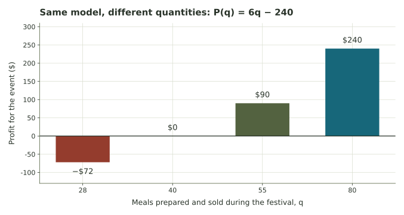

Choose a food-stand plan.
Build a complete event model, compare prices under stated sales assumptions, and investigate what happens when some meals remain unsold.
A student organization runs a pop-up food stand
The stand pays $240 for its permit, equipment, and setup. Each meal costs $3.50 in ingredients and packaging and sells for $9.50. At first, assume every meal prepared is sold. Let q be meals prepared and sold during the event.
| Quantity | Value | Meaning |
|---|---|---|
| F | $240 per event | Applies even at zero sales under this operating plan |
| v | $3.50 per meal | Added to cost for each meal prepared |
| p | $9.50 per meal sold | Added to revenue for each sale |
We will build the model, test sales levels, and compare prices. Later we will relax the all-meals-sold assumption. The explorer’s food-stand preset uses these same numbers. Enter numerical answers without dollar signs; written responses save for instructor review.
Write all three functions
Use \(C(q)=F+vq\), \(R(q)=pq\), and \(P(q)=(p-v)q-F\). At q=0, revenue is zero and the setup expense remains, so the profit intercept must be negative.
How many meals cover the modeled expenses?
Break-even means revenue equals cost. Solve the equation, then substitute your quantity into both functions. The common dollar amount and the quantity are different answers.
Compare separate sales plans

Compare prices while holding sales fixed
The group considers lowering price to $8.50, keeping F=$240 and v=$3.50. First compare both prices at exactly 80 sales. This isolates the price effect; it does not predict demand.
Could extra sales offset a smaller margin?
Keep the $9.50 plan at 80 sales, with profit $240. Now enter a hypothetical number sold at the $8.50 price. Continue to assume all meals prepared are sold, at either price. The two scenarios describe the same event and fixed expense.
Predict the quantity at which the two plans tie, then verify by entering neighboring whole counts. A sales estimate is a conditional input; it is not evidence that lowering price will create those sales.
Prepared meals can cost money without bringing in revenue
For this calculation, use the original $9.50 price. Suppose n meals are prepared but s are sold. With no refunds or salvage value, \(C=240+3.5n\), \(R=9.5s\), and \(P=9.5s-240-3.5n\). The sale count cannot exceed the prepared count.
Your recommendation should connect an outcome to its assumptions. The more detailed model does not remove uncertainty about demand, but it records the distinction that the first model omitted.